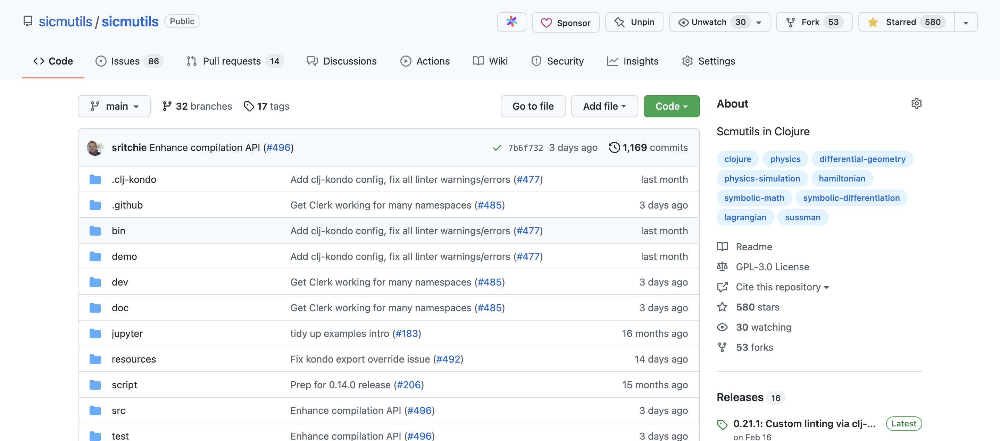
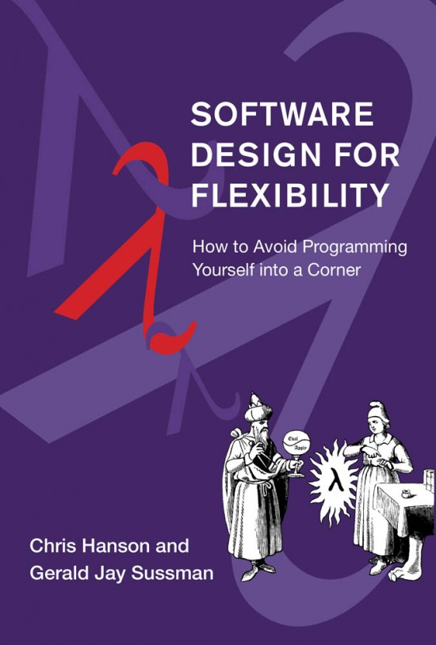
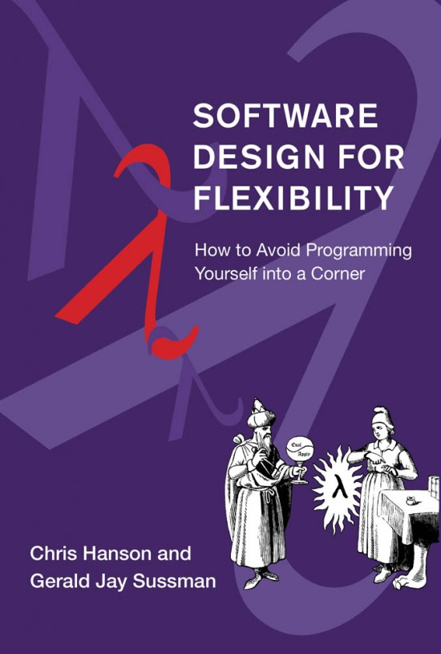

Building SICMUtils
The Atelier of Abstractions
Sam Ritchie, Mentat Collective
SICMUtils
❤️ Open Source ❤️
Agenda
- Overview of SICMUtils
- Programming Techniques
- Issues
- Demos
Thanks to GJS
(and many others!)
 

SICMUtils Project goals
Library as Workshop / Textbook
Many Environments
- REPL
- Nextjournal
org-mode, these slides- Clojure, Clojurescript
- Zeugma, any Java environment
- TexMacs
- Roam Research or Obsidian, etc
What's in the library?
Numerics
-
full numeric tower in JavaScript, up to
Complex - dual numbers
- modular arithmetic types
- Quaternions, beyond
Extensible Generics
((square +) 'x 'y)
(expt (+ x y) 2)
((square +) 1 2)
9
Examples of Generics
[sicmutils.generic
* + - / divide
negate
negative? infinite?
invert
abs
sqrt
quotient remainder modulo
floor ceiling
integer-part fractional-part
expt
exp exp2 exp10
log log2 log10
gcd lcm
exact-divide
square cube
cos sin tan
cot sec csc
atan
acos asin acot asec acsc
cosh sinh tanh coth sech csch
acosh asinh atanh acoth asech acsch
sinc tanc sinhc tanhc
make-rectangular make-polar
real-part imag-part
magnitude angle conjugate
transpose trace determinant dimension
dot-product inner-product outer-product cross-product
partial-derivative Lie-derivative
solve-linear solve-linear-left solve-linear-right
simplify]
Symbolic Computation
(+ (square (sin 'x))
(square (cos 'x)))
(+ (expt (sin x) 2) (expt (cos x) 2))
(simplify
(+ (square (sin 'x))
(square (cos 'x))))
1
"Compound" Data Types
- vector, matrix, up, down structures
- polynomial, rational function
- power series
- quaternions
"Literals", ie, symbolic-like things:
- literal numbers
- literal functions
- symbols, or
literal-number - literal vectors, matrices
- quantum states, bra, ket
Pattern Matching DSL
(rule (/ (* ??u ?x ??v) (sqrt ?x))
=>
(* ??u (sqrt ?x) ??v))
Pattern Combinators
(let [r (while (fn [l _] (< l 100))
(rule ?x => (? #(inc (% '?x)))))]
(= 101 (r 12)))
Literal Derivative:
(choice
(rule (D ?f) => ((expt D 2) ?f))
(rule ((expt D ?n) ?f) => ((expt D (? #(inc (% '?n)))) ?f))
(rule ?f => (D ?f)))
Renderers
Infix:
(->infix
(+ (square (sin 'eta))
(cube (tan 'phi_2))))
sin²(η) + (tan(φ₂))³
TeX:
(->TeX
(+ (square (sin 'eta))
(cube (tan 'phi_2))))
{\sin}^{2}\left(\eta\right) + {\left(\tan\left({\phi}_2\right)\right)}^{3}
Renderers
JavaScript Source Renderer
(println
(->JavaScript
(+ (square (sin 'eta))
(cube (tan 'phi-2)))))
function(eta, phi_2) {
return Math.pow(Math.sin(eta), 2) + Math.pow(Math.tan(phi_2), 3);
}
Function Compilation
(defn my-fn [x y]
(+ x
(sin y)
(square (cos 'x))
(square (sin 'x))
(cube (sin y))))
(binding [*mode* :source]
(compile-fn my-fn))
(clojure.core/fn [x45929 x45930]
(clojure.core/let [G0000000000000000 (Math/sin x45930)]
(clojure.core/+ (clojure.core/*
-1.0
G0000000000000000
(Math/pow (Math/cos x45930) 2.0))
x45929
(clojure.core/* 2.0 G0000000000000000)
1.0)))
Functional Numerical Methods
- Univariate and multivariate minimization
- Polynomial and RF interpolation
- Richardson Extrapolation
- (FUNCTIONAL!) Numerical quadrature
- numeric derivatives
- Native ODE solvers
- …
Automatic Differentiation
- Forward mode,
- immutable reverse mode!
Physics
- Hamiltonian and Lagrangian mechanics
- Differential Geometry
- Manifolds, Coordinate Systems
- Tensor Calculus
- Geometric Algebra
Animations
- Mathbox
- JSXGraph
- extensible from Clojure, not JS!
SICMUtils Programming Techniques
- Extensible Generics
- Clojure is Opinionated!
- Combinators
- DSLs, Pattern Matching
Type vs Kind
(map kind [(make-rectangular 1 2) 10 {:k "v"}])
(:sicmutils.complex/complex java.lang.Long clojure.lang.PersistentArrayMap)
Constrained Extensibility
(derive ::square-matrix ::matrix)
(derive ::column-matrix ::matrix)
(derive ::row-matrix ::matrix)
(derive ::matrix ::f/cofunction)
(defmethod g/mul [::matrix ::matrix] [a b]
(mul a b))
(defmethod g/mul [::v/scalar ::matrix] [n a]
(scalar*matrix n a))
(defmethod g/mul [::matrix ::v/scalar] [a n]
(matrix*scalar a n))
Stick with Clojure
- Different Environments, CLJS
- Small # of core data structures
- ~Everything is Immutable
Pragmatic Core
[] {} #{} () :keyword 'sym
#quaternion [1 2 3 4]
#complex [2 3]
Combinators
- pattern matching combinators
- numerical method combinators:
infinite - Aggregation functions
DSL, Pattern Matching:
(require '[pattern.rule :as r :refer [ruleset =>]])
(defn unary-elimination [& ops]
(let [op-set (into #{} ops)]
(ruleset
((? _ op-set) ?x) => ?x)))
(defn constant-elimination [op constant]
(letfn [(filter-constants [{xs '??xs}]
(remove #{constant} xs))]
(ruleset
(~op ??xs) => (~op (?? ~filter-constants)))))
(defn constant-promotion [op constant]
(ruleset
(~op _ ~constant) => ~constant
(~op ~constant _) => ~constant))
(def my-simplify
(r/rule-simplifier
(unary-elimination '+ '*)
(constant-elimination '+ 0)
(constant-elimination '* 1)
(constant-promotion '* 0)))
(my-simplify
'(cos (+ 0 (+ 0 12 0) (* 1 x))))
(cos (+ 12 x))
Operator Simplification
(def simplify-operator-name
(rule-simplifier
(rules/associative '+ '*)
rules/exponent-contract
(rules/unary-elimination '+ '*)))
Multi-Stage Programming
(defn my-fn [x y]
(+ x
(sin y)
(square (cos 'x))
(square (sin 'x))
(cube (sin y))))
(binding [*mode* :source]
(compile-fn my-fn))
(clojure.core/fn [x45929 x45930]
(clojure.core/let [G0000000000000000 (Math/sin x45930)]
(clojure.core/+ (clojure.core/*
-1.0
G0000000000000000
(Math/pow (Math/cos x45930) 2.0))
x45929
(clojure.core/* 2.0 G0000000000000000)
1.0)))
Clojure Community
- Sussman et. al.
- Colin Smith
- Clerk: Martin Kavalar, Jack Rusher, Nextjournal team
- maria.cloud
- SCI, CLJ-Kondo: Michiel Borkent (@borkdude)
Hard?
- No types so far
- what's the right way to introspect the library?
- Context
Demos
Thanks!
Sam Ritchie, Mentat Collective
Slides, Demos live at https://github.com/sritchie/programming-2022